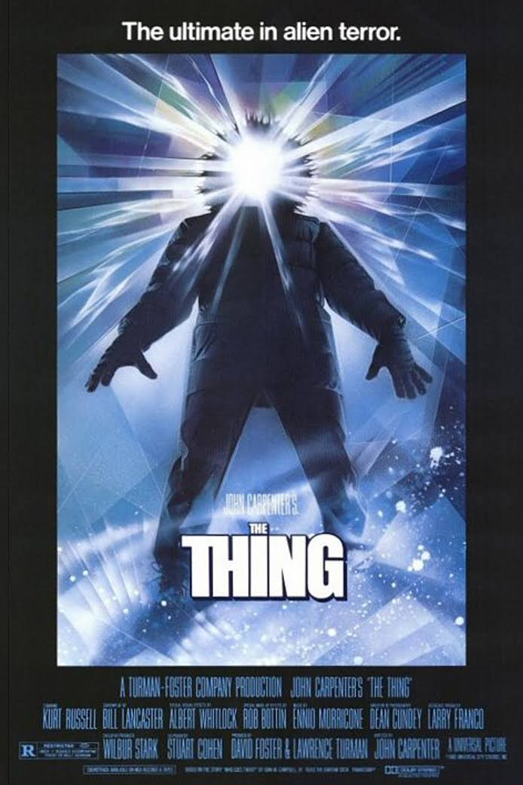

Neste último tópico, vou falar sobre filmes, onde vou colocar os meus 3 filmes favoritos.
3 - The Matrix
The Matrix é um filme de science fiction/action escrito e direção dos irmãos, agora irmãs, the Wachowskis. Este foi o primeiro filme da série Matrix onde teve Keanu Reeves, Laurence Fishburne e mais atores.
O filme foi lançado em Março de 1999 onde na Box Office conseguio gerir 467 milhões de Dólares, mais de 4 vezes mais do que gastaram que foi 63 milhões de Dólares.
O história acompanha um programador de computadores chamado Thomas Anderson que descobre que o mundo onde vive é na verdade uma simulação de realidade virtual criado por máquinas inteligentes para
controlar a população humana. Com a ajuda de outros rebeldes, Anderson, que assume o nome de Neo, luta contra as máquinas para libertar a humanidade da ilusão da Matrix.
2 - The Thing
The Thing é um filme de science fiction/horror direcionado por John Carpenter. Este filme foi lançado em Junho de 1982 e na Box Office conseguiram alcançar 19,6 Milhões de dólares o que não é muito comparando
com o que gastaram que foi 15 milhões de dólares. O filme é baseado na novela "Who Goes There?" de W. Campbell Jr. e história gira em torno de uma equipa de cientistas que descobrem uma criatura extraterrestre que tem a capacidade de imitar a forma de qualquer organismo que mata.
A criatura começa a matar membros da equipa e ninguém sabe em quem confiar, pois qualquer um deles pode ser a criatura disfarçada.

1 - Lord of the Ring
A trilogia "O Senhor dos Anéis" é uma obra de fantasia épica escrita por J.R.R. Tolkien e adaptada para o cinema por Peter Jackson. A história se passa na Terra Média e segue a jornada do hobbit Frodo Baggins e seus amigos, que têm a missão de destruir um anel mágico que tem o poder de controlar toda a Terra Média nas mãos do maligno Senhor do Escuro, Sauron. Durante esta jornada, eles enfrentam muitos perigos e encontram personagens fascinantes, como elfos, anões, magos e humanos. A trilogia é composta pelos filmes "A Sociedade do Anel" (2001), "As Duas Torres" (2002) e "O Retorno do Rei" (2003).
Combinados estes filmes conseguiram arrecadar 2991 biliões de dólares para um custo de apenas 281 milhões de dólares, fascinante.

.png)
.png)